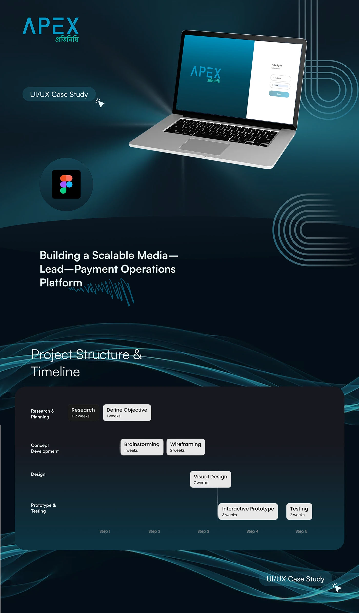
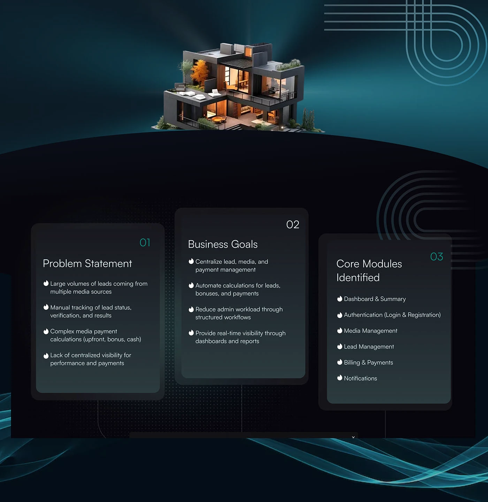
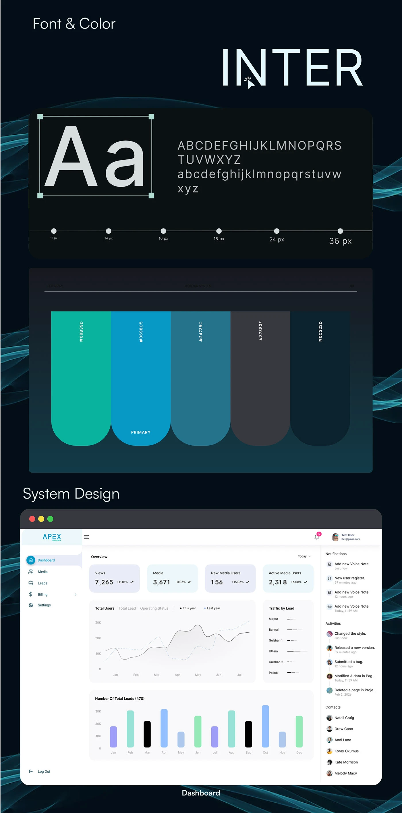

Proptech · Admin platform · Apex DMIT
The admin panel
Media partners, leads and commission payments on one platform — the desk side of the same product the Protinidhi app serves in the field.
- Role
- Research, UX design, UI design
- Duration
- About four months, Apex DMIT
- Platform
- Web admin platform
- Client
- Apex Property, Bangladesh
- Tools
- Figma, Photoshop, Illustrator
01The problem
Leads arrived in volume from many different media sources, and everything after that was manual: tracking each lead's status, verifying it, recording the result.
Payment was the harder half. Media partners were paid through a mix of upfront fees, bonuses and cash, calculated by hand. Nobody had one place to see how a partner was performing or what they were owed.
02What it had to do
- Centralise media, leads and payments so the three stop living in separate places.
- Automate the calculations for leads, bonuses and payments, rather than recomputing them per partner.
- Cut admin workload by giving the work a structured path instead of a spreadsheet.
- Make performance visible in real time, through dashboards and reports rather than month-end.
Six core modules
-
Dashboard & summary
Views, media count, new and active partners, leads by stage, and traffic by area — the whole operation on one screen.
-
Authentication
Login and registration, with the split-screen sign-in that carries the brand.
-
Media management
Partners with maturity date, amounts paid, bonuses payable, verification and success rates, and leads provided against leads converted.
-
Lead management
Every lead with its media source, contact, type, amount and two separate states — payment status and lead result.
-
Billing & payments
Regular, bonus and cash payments kept apart, each with its own history, plus the settings that drive the calculations.
-
Notifications
Voice notes, registrations and activity in a side rail, so what changed is visible without leaving the dashboard.
03Two things worth pointing at
Payment rules became settings, not code. Bonus cycle, bonus tenure, referral amount and regular payment cycle are configurable on screen. The complexity that was being done by hand is now a form the business can change without a developer.
Payment status and lead result are separate columns. A lead can be won and unpaid, or paid and rejected. Collapsing those into one status is the obvious shortcut, and it is the one that makes a commission system impossible to audit.
04The system
Inter across a six-step scale from 12 to 36px, and a five-colour palette
built on #0698C5 as primary with a green accent for positive
states. Dense tables, so the type had to stay legible small and the
palette had to leave room for status colour.




05Credit
Research, UX and UI at Apex DMIT for Apex Property. Published on Behance.
Apex Protinidhi app
The field agent side of the same product — Bengali-first, with voice notes and earnings.
Say hello
Happy to walk through this project, or any of the others, on a call.